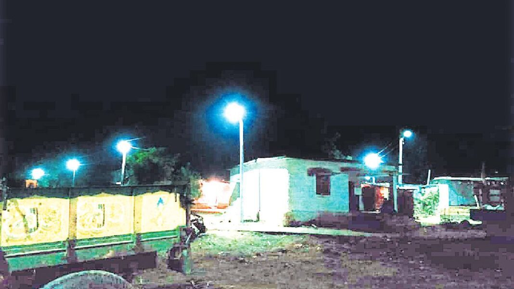
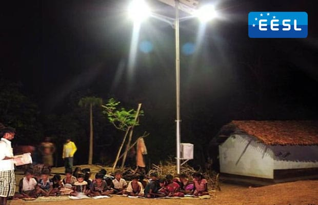

Maintenance of Street Lights and Drinking Water in Gram Panchayat Areas
Introduction
Proper maintenance of essential public utilities such as street lights and drinking water is a key responsibility of Gram Panchayats. Ensuring the availability and functionality of these services improves the quality of life for residents, enhances safety, and promotes overall rural development.
Street Light Maintenance

Street lights are crucial for security, transportation, and the overall well-being of a community. Proper maintenance includes:
Routine Maintenance
- Regular inspection of street lights to identify non-functional units.
- Cleaning of light fixtures to improve brightness and efficiency.
- Timely replacement of fused or broken bulbs.
- Periodic checks of poles and wiring for wear and tear.
Energy Efficiency Measures
- Installation of LED lights to reduce energy consumption.
- Use of solar-powered street lights where feasible.
- Implementation of automatic switch-on/off systems to optimize power usage.
Repair and Complaint Resolution
- Setting up a helpline or complaint portal for residents to report non-working street lights.
- Assigning dedicated maintenance workers for quick repairs.
- Regular review of complaints to ensure timely resolution.

Drinking Water Maintenance
Ensuring access to clean and safe drinking water is a fundamental responsibility of Gram Panchayats. Proper maintenance activities include:
Water Source Management
- Regular cleaning and desilting of wells, ponds, and reservoirs.
- Protection of water sources from contamination.
- Monitoring groundwater levels to prevent depletion.
Pipeline and Supply Maintenance
- Regular inspection of pipelines for leaks and damages.
- Quick repair of broken pipes to prevent water wastage.
- Installation of water meters to monitor usage and prevent overuse.
Water Purification and Quality Testing
- Implementation of water purification systems such as chlorination and filtration.
- Periodic testing of water quality to check for contaminants.
- Ensuring safe storage and distribution to households.
Role of Gram Panchayat
The Gram Panchayat plays a crucial role in maintaining these essential services. Their responsibilities include:
- Allocating funds for street light and water maintenance projects.
- Appointing workers for regular upkeep and repairs.
- Coordinating with higher authorities for major infrastructure improvements.
- Conducting awareness campaigns on energy conservation and water-saving techniques.
Community Participation
Involvement of local residents is essential for maintaining these services efficiently. Community members can contribute by:
- Reporting faulty street lights and water supply issues.
- Participating in cleanliness drives around water sources.
- Using electricity and water responsibly.
- Collaborating with Panchayat officials to suggest improvements.
Challenges in Maintenance
Despite best efforts, there are challenges in maintaining street lights and drinking water in rural areas, including:
- Limited funding for repairs and upgrades.
- Shortage of skilled maintenance workers.
- Difficulty in reaching remote villages.
- Vandalism and theft of equipment.
Solutions and Recommendations
To improve maintenance and ensure uninterrupted services, the following measures can be adopted:
- Utilizing government schemes and grants for infrastructure development.
- Training local youth in maintenance and repair work.
- Encouraging the use of smart technology for monitoring street lights and water systems.
- Setting up village-level committees to oversee maintenance efforts.
Conclusion
Proper maintenance of street lights and drinking water is vital for rural development. With effective planning, community involvement, and government support, Gram Panchayats can ensure these essential services function smoothly, improving the overall living conditions in villages.